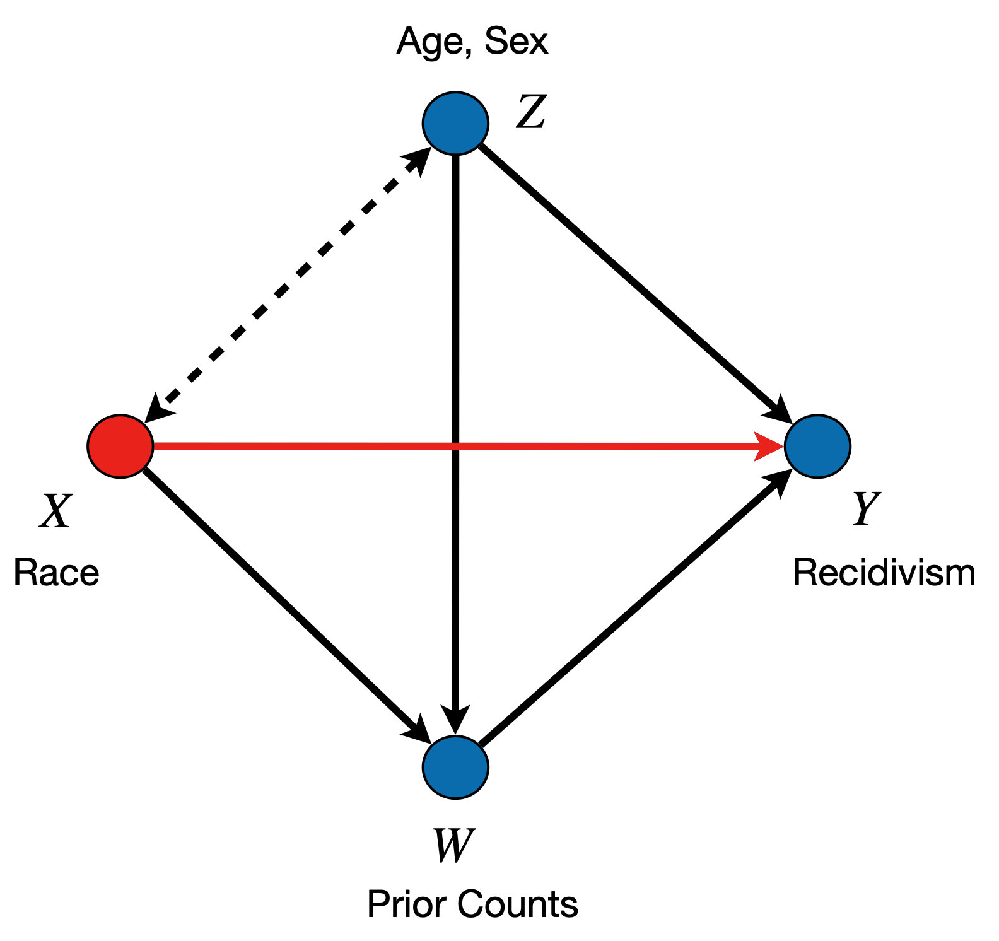
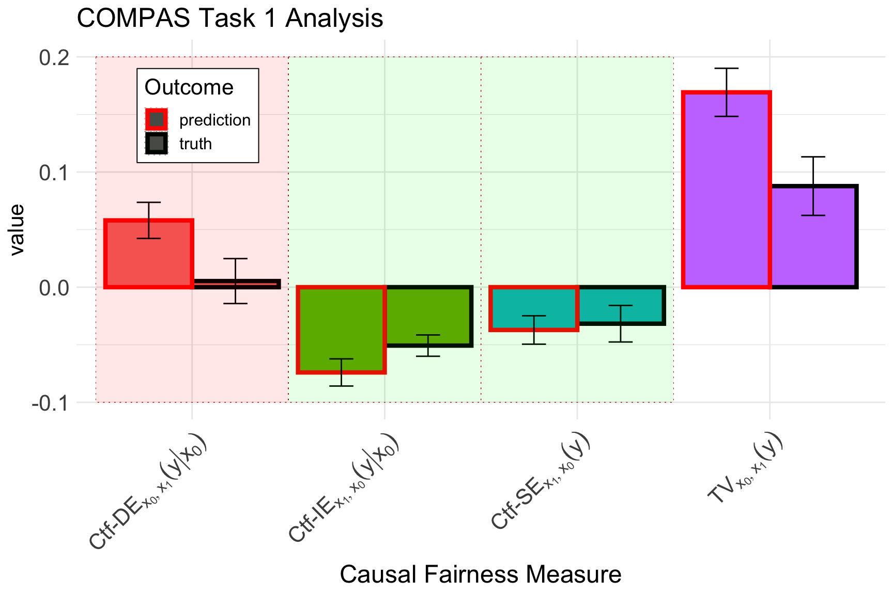

Courts in Broward County, Florida use machine learning to predict whether individuals released on parole are at high risk of re-offending within 2 years (\(Y\)). The algorithm is based on the demographic information \(Z\) (\(Z_1\) for gender, \(Z_2\) for age), race \(X\) (\(x_0\) denoting White, \(x_1\) Non-White), juvenile offense counts \(J\), prior offense count \(P\), and degree of charge \(D\).
In this vignette, we perform the task of bias detection on this dataset. We begin by loading and pre-processing the original data:
In Causal Fairness Analysis, we are interested in decomposing the TV measure (also known as the parity gap), into its direct, indirect, and spurious components. We show the causal diagram associated with the data, and also a representation of how the target effects can be visualized as follows:
Figure 1: COMPAS Causal Diagram

Figure 2: Direct effect visualization.
Figure 3: Indirect effect visualization.
Figure 4: Confounded effect visualization.
After obtaining the data, we then specify the Standard Fairness Model, and decompose the TV measure for the true outcome \(Y\):
X <-"race"Z <-c("age", "sex")W <-c("juv_fel", "juv_misd", "juv_other", "priors", "charge")Y <-c("two_year_recid")two_year <-fairness_cookbook(data, X = X, W = W, Z = Z, Y = Y,x0 ="Majority", x1 ="Minority")autoplot(two_year, decompose ="xspec") +ggtitle(TeX("$Y$ disparity decomposition COMPAS"))
Causal decomposition of the TV measure for two-year recidivism.
However, we are also interested in the disparity for the predictor \(\widehat{Y}\), so we can decompose the TV measure for the predictor, too:
Yhat <-"northpointe"north_decompose <-fairness_cookbook(data, X = X, W = W, Z = Z, Y = Yhat,x0 ="Majority", x1 ="Minority")autoplot(north_decompose, decompose ="xspec") +ggtitle(TeX("$\\widehat{Y}$ disparity decomposition COMPAS"))
Causal decomposition of the TV measure for Northpointe’s predictions.
To perform the complete analysis, we plot the two results side-by-side, and shade the areas depending on whether the associated measure is included in the business necessity set or not:

Causal decompositions of the TV measure for the true and predicted outcomes visualized together.